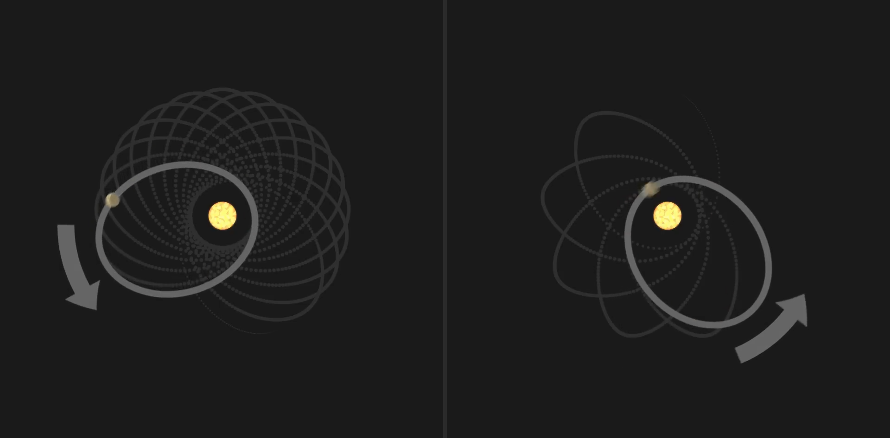

Մեկ այլ ցուցանիշ, այն է, որ Մերկուրիի ուղեծրը ժամանակի ընթացքում փոխում է կողմնորոշումը որոշակի արագությամբ, եթե գրավիտացիան ուժ էր, ապա մենք կարող էինք ճշգրիտ կանխատեսել նրա արագությունը, որով պետք է փոխվի այս ուղեծիրը, սակայն երբ մենք դիտարկում ենք ուղեծիրը փոխվում է մի փոքր այլ արագությամբ:
